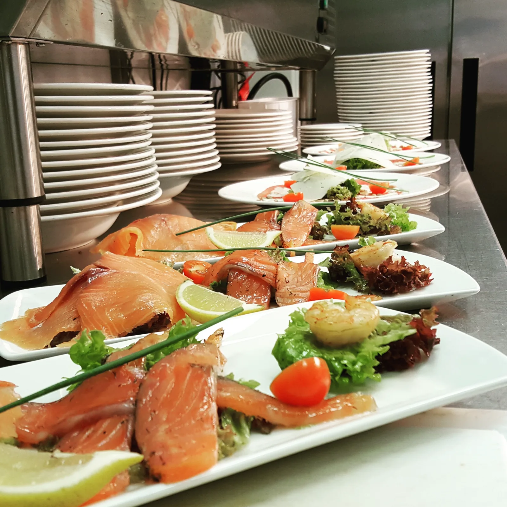
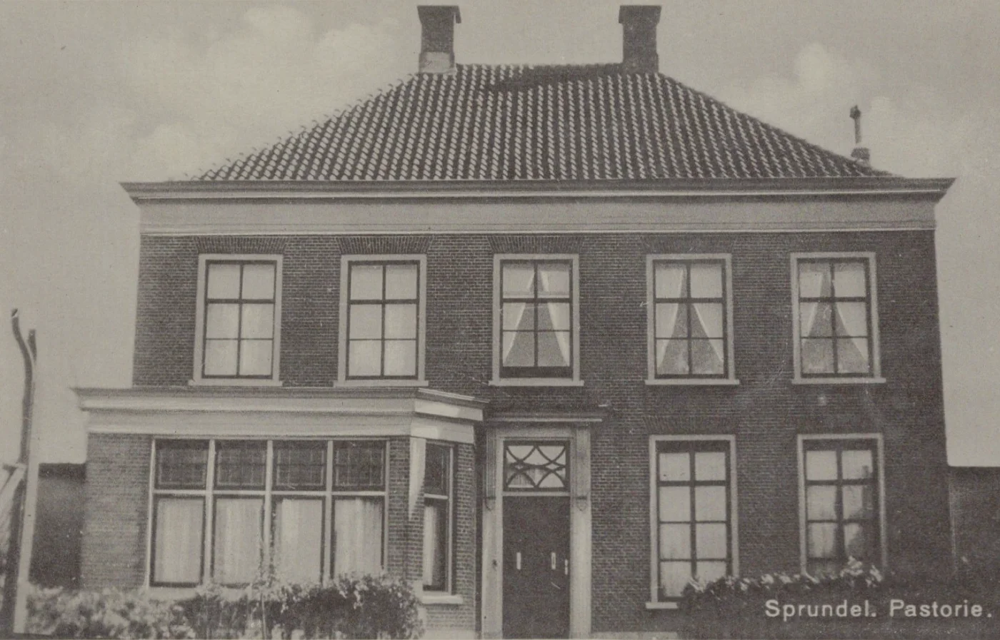
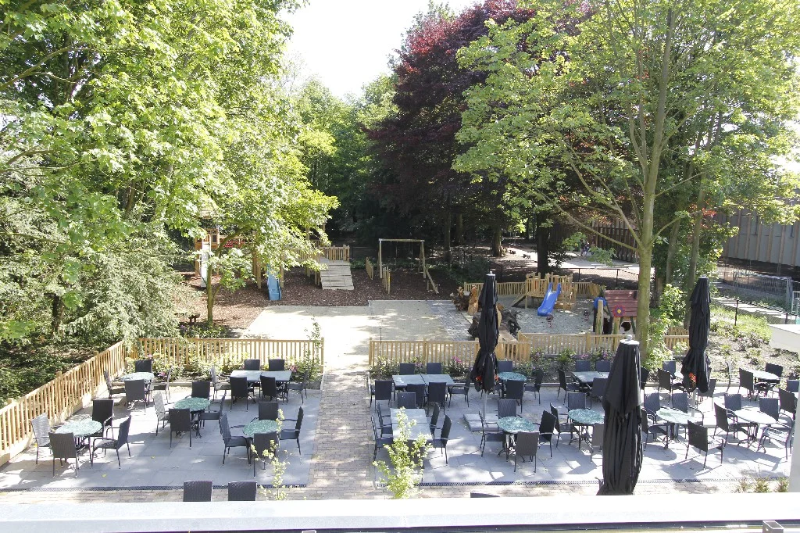
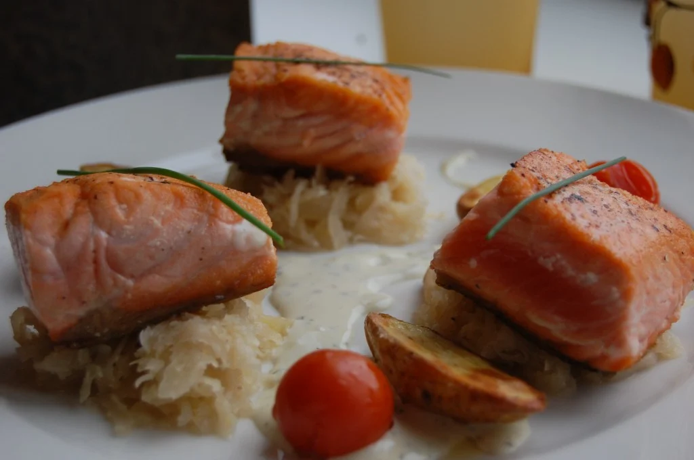
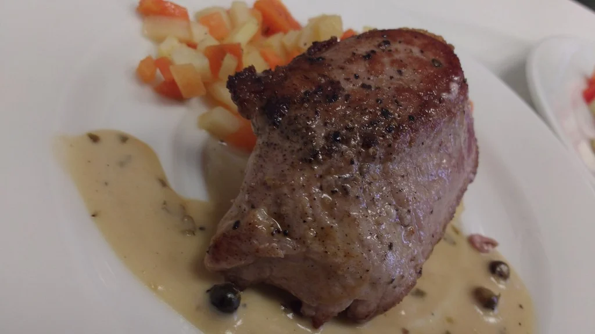
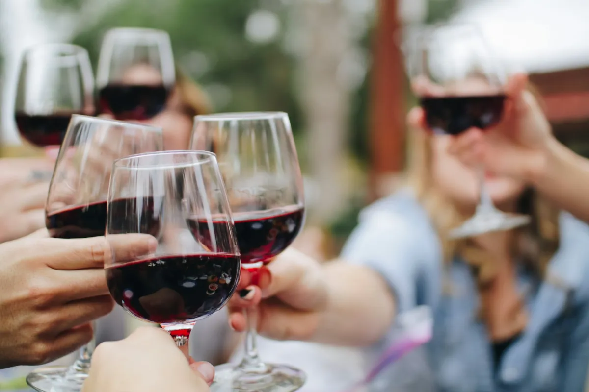
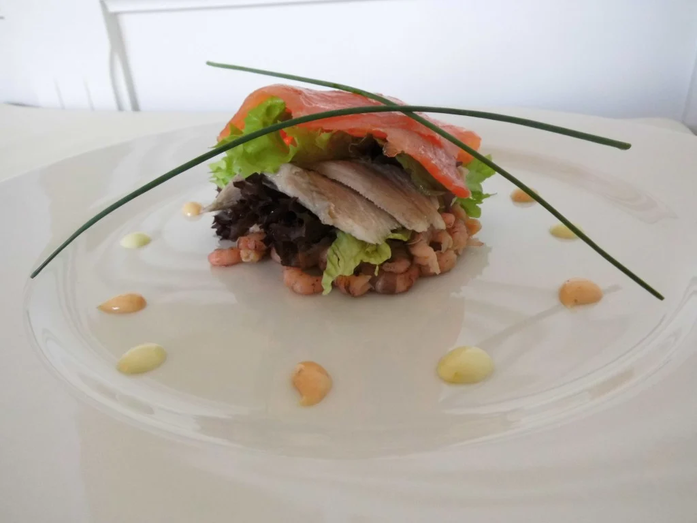
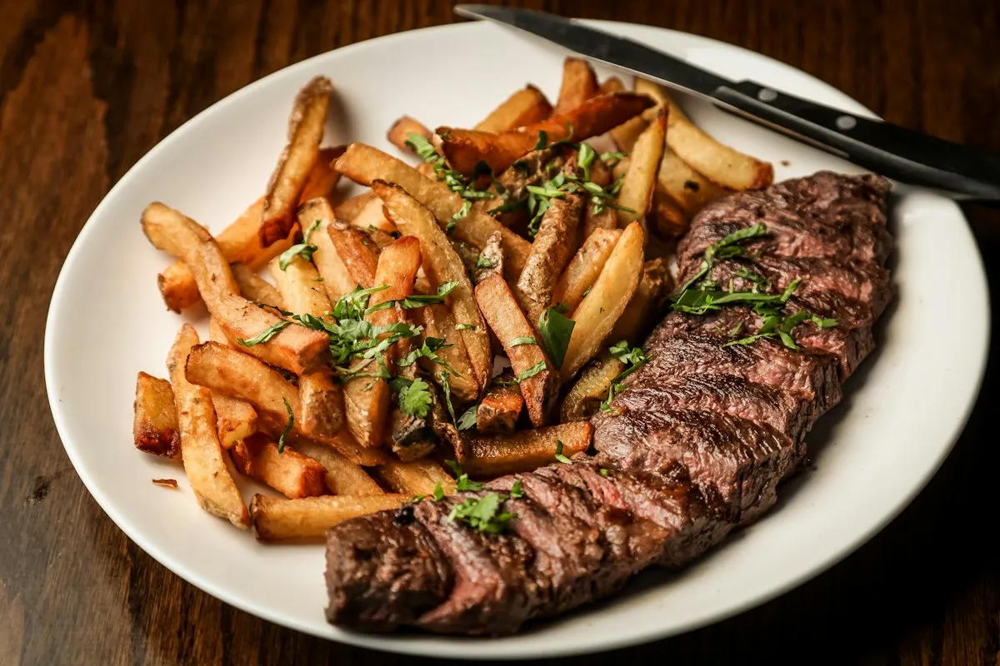

Sint Janstraat 62, Sprundel
Lunch en diner in de Pastorie van Sprundel
Bereid met verse, lokale ingrediënten, in een gastvrije sfeer. Binnen aan tafel of buiten op het terras, met de buitenspeeltuin om de hoek.


Welkom bij Brasserie de Pastorie
U kunt bij ons terecht voor een heerlijke lunch of diner, bereid met verse, lokale ingrediënten in een gastvrije sfeer.
Van een broodje carpaccio of een kom huisgemaakte tomatensoep tussen de middag tot tournedos, rib-eye van de grill of gebakken kabeljauw in de avond. En voor de kinderen staat er een eigen kaart klaar, met de Smulbox en een verrassingsspeelgoedje.
- Terras
- Buitenspeeltuin
- Gratis parkeren

Op het terras zit u tussen het groen, terwijl de kinderen achterin spelen in de buitenspeeltuin.





Reserveren
Voor al uw reserveringen kunt u telefonisch contact met ons opnemen.
0165 - 85 31 11Komt u met een groep van meer dan 10 personen? Dan stellen we vooraf samen een menu voor u samen.

Openingstijden
| Maandag | Gesloten |
|---|---|
| Dinsdag | Gesloten |
| Woensdag | Vanaf 12.00 uur |
| Donderdag | Vanaf 12.00 uur |
| Vrijdag | Vanaf 12.00 uur |
| Zaterdag | Vanaf 12.00 uur |
| Zondag | Vanaf 12.00 uur |
Contact
Brasserie de PastorieSint Janstraat 62
4714 EH Sprundel